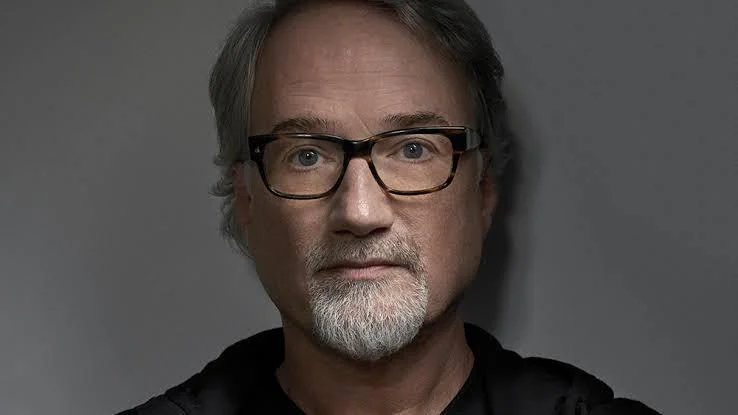

David Cronenberg

Nom complet: David Paul Cronenberg
Vida: 1943 - Actualitat
Nacionalitat: Canadenc
Premis destacats: 2 nominacions als Globus d'Or, Premi a Millor Pel·lícula al Festival de Cannes.
Pel·lícules més reconegudes:
- The Fly
- A History of Violence
- The Dead Zone
- Crash
- Eastern Promises
Veure més
David Fincher

Nom complet: David Andrew Leo Fincher
Vida: 1962 - Actualitat
Nacionalitat: Estatunidenc
Premis destacats: 40 nominacions als Òscars i 9 premis de l'acadèmia
Pel·lícules més reconegudes:
- Fight Club
- Seven
- The Game
- The Curious Case of Benjamin Button
- Gone Girl
Veure més
Alfred Hitchcock
Nom complet: Alfred Joseph Hitchcock
Vida: 1899 - 1980
Nacionalitat: Britànic - Estatunidenc
Premis destacats: 5 nominacions a millor director als Òscars, 2 Globus d'Or
Pel·lícules més reconegudes:
- Psycho
- Vertigo
- The Birds
- Rebecca
- Notorious
Veure més
Hayao Miyazaki

Nom complet: Hayao Miyazaki (宮崎 駿)
Vida: 1941 - Actualitat
Nacionalitat: Japonès
Premis destacats: 3 Òscars, 1 Globus d'Or, 2 Premis BAFTA
Pel·lícules més reconegudes:
- Spirited Away
- My Neighbor Totoro
- Princess Mononoke
- Kiki's Delivery Service
- Howl's Moving Castle
Veure més
Martin Scorsese

Nom complet: Martin Luciano Scorsese
Vida: 1942 - Actualitat
Nacionalitat: Estatunidenc
Premis destacats: 1 Òscar i 7 nominacions a millor director,
Pel·lícules més reconegudes:
- Taxi Driver
- Raging Bull
- Goodfellas
- The Departed
- Casino
Veure més